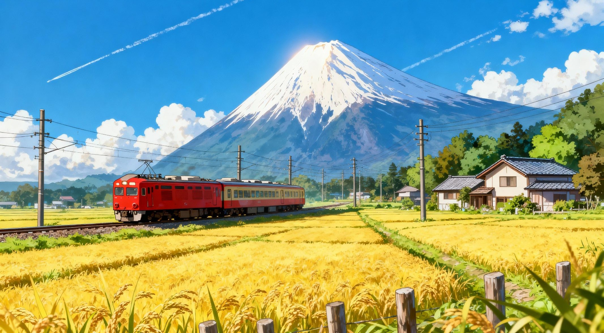
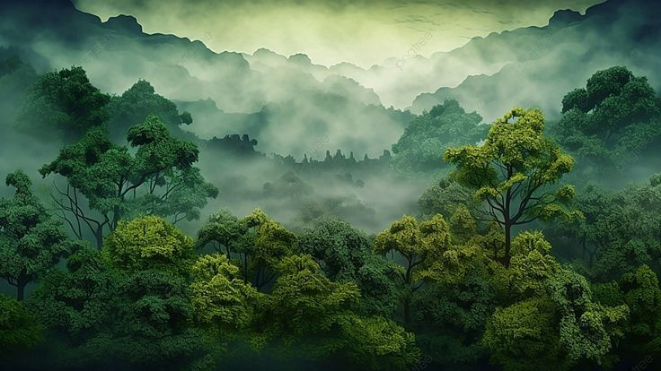
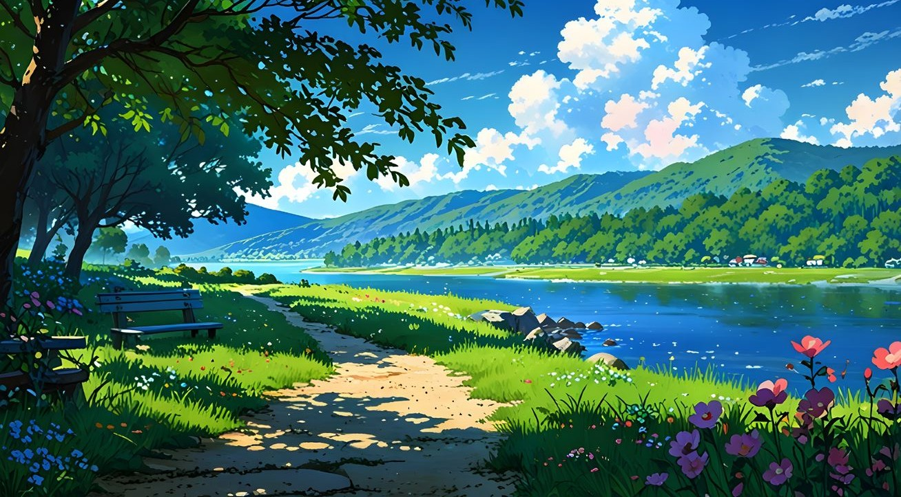
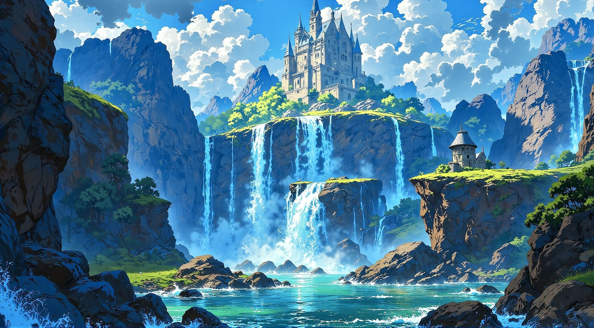

Beautiful Nature Photo

Mountains are towering natural formations created by tectonic forces and erosion, rising high above the surrounding land. They often feature lush forests at their base, rivers flowing through valleys, and snowy peaks at the top. These landscapes are not only visually stunning but also vital sources of freshwater and home to diverse wildlife. For many cultures, mountains symbolize strength and spirituality, while for travelers they offer adventure, serenity, and breathtaking views.
For More Information
Forests are vast ecosystems filled with trees, plants, animals, and countless forms of life, often called the “lungs of the Earth” because they produce oxygen and absorb carbon dioxide. They provide shelter for wildlife, regulate climate, and supply humans with food, medicine, and raw materials. From dense tropical rainforests to cool temperate woodlands, forests are vital for biodiversity and balance in nature, while also offering peace, beauty, and inspiration to those who walk beneath their canopy.
For More Information
Rivers are flowing bodies of water that shape landscapes and sustain life wherever they run. They begin from sources like springs, glaciers, or rainfall in mountains and travel across valleys and plains before reaching seas or oceans. Along their course, rivers provide freshwater, fertile soil for farming, and habitats for countless species. They have always been central to human civilization, serving as routes for trade, sources of energy, and places of cultural and spiritual significance.
For More Information
Waterfalls are stunning natural features where rivers or streams plunge over cliffs, creating a powerful cascade of water. They form when flowing water erodes softer rock beneath harder layers, eventually carving dramatic drops in the landscape. Beyond their beauty, waterfalls enrich ecosystems by oxygenating water and supporting diverse plant and animal life. For people, they are symbols of strength and renewal, often drawing travelers and photographers who seek the mesmerizing sight and sound of water tumbling into mist below.
For More InformationA sunset is the daily spectacle when the sun dips below the horizon, painting the sky in shades of orange, pink, purple, and gold. It marks the transition from day to night, often creating a calm and reflective atmosphere. Sunsets are shaped by clouds, dust, and moisture in the air, which scatter sunlight into vivid colors. For many, watching a sunset is a moment of peace and beauty, symbolizing closure, hope, and the promise of a new dawn.
For More InformationRajwardhan Rathod
Ganesh Jadhav